Mathematical model of the quadcopter, extended and corrected
This chapter replaces and extends Chapter 3 of the 2022 thesis (Modelul matematic al dronei).
It follows Luukkonen, Modelling and control of quadcopter (Aalto University, 2011), which
is reference [13] of the thesis, and adds the parts the original chapter did not cover: the
translational dynamics, hover equilibrium, X-frame allocation, linearisation, the controller
actually running on the ATmega328P, the estimator, and the sensor models. Each result is
checked numerically in simulation/quad_sim.py.
Corrections to the 2022 text are marked correction.
1. Generalised coordinates
The absolute position of the centre of mass in the inertial frame
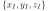
( up) is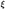
. The attitude is given by the Z-Y-X Euler angles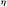
: roll about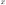
, pitch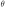
about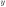
, yaw about .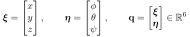
correction: the thesis wrote
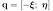
. The minus sign is a typo.Body-frame linear and angular velocities:
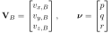
2. Kinematics
Rotation matrix (body → inertial), with
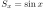
,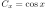
: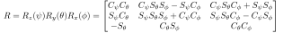
:
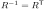
and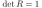
.Euler-rate transformation:
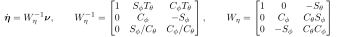
Since
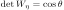
, the matrix is invertible if and only if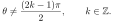
correction: the thesis wrote  . The singularity (gimbal lock) is at
. The singularity (gimbal lock) is at
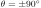
and does not depend on .3. Rotor forces and torques
Rotor
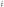
, spinning at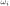
, produces a thrust along its axis and a reaction (drag) torque: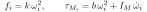
where
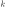
is the lift constant,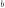
the drag constant and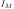
the rotor inertia. The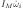
term is small and usually neglected. Total thrust in the body frame: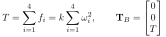
3.1 "+" configuration (the one written in the thesis)
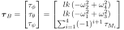
correction: the yaw torque needs the alternating sign , or an equivalent signed sum. Adjacent rotors spin in opposite directions, so their reaction torques cancel. A plain
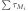
would never be zero, and the aircraft could not hold its heading.3.2 "X" configuration (the built drone)
The firmware mixer and the photo of the aircraft show an X frame. Motors sit at
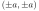
with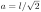
, numbered M1 front-left, M2 front-right, M3 rear-left and M4 rear-right. M1 and M4 spin CW, M2 and M3 CCW. With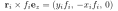
:
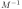
is the control-allocation matrix. Up to sign conventions and the linear µs→ω² approximation, it is the motor mixer in the firmware: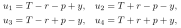
Here
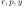
are the PID outputs (µs) for roll, pitch and yaw, with the firmware convention roll + = left side up, pitch + = nose up, yaw + = nose right.4. Dynamics (Newton–Euler)
Translation (inertial frame), with the linear drag matrix :
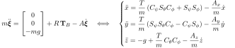
Rotation (body frame, Euler's equation with rotor gyroscopic moment ):
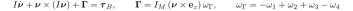
With
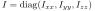
: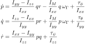
The system has 6 degrees of freedom and only 4 independent inputs (
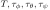
), so it is under-actuated. Horizontal motion is obtained only by tilting the thrust vector.correction: the thesis says "we can control only φ, θ and ψ". The inputs are actually the total thrust and the three torques. Altitude is directly actuated, while and are not.
5. Hover equilibrium (numerical values used in the simulation)
| Quantity | Symbol | Value | Basis |
|---|---|---|---|
| mass | 1.20 kg | F450 frame, 4 motors, RPi 4, Uno, sensors, 3S 2200 mAh | |
| arm length | 0.225 m | F450 | |
| inertia | 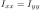 ,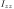 |
0.0115, 0.0226 kg·m² | point-mass estimate |
| lift constant | 8.5·10⁻⁶ N·s² | 10×4.5″ propeller, ~8.5 N at 1000 rad/s | |
| drag constant | 1.4·10⁻⁷ N·m·s² | 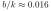 m |
|
| motor time constant | 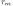 |
40 ms | typical 920–1000 KV + 30 A ESC |
At hover
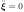
and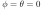
: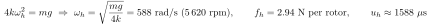
These parameters are estimates for an F450-class frame. Measure , weigh the thrust on a scale, and do a bifilar-pendulum test for to calibrate the model to the real aircraft.
6. Linearisation about hover
For small angles (
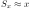
,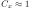
,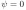
) and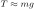
:Assume a first-order motor, , and linearise at :
The roll-rate plant (input: PID output in µs, output: rate in °/s) is then
and the roll angle is .
7. Controller implemented in the firmware
7.1 Inner loop: discrete PID on the angular rate (250 Hz, ms)
| axis | continuous equivalent | ||||
|---|---|---|---|---|---|
| roll, pitch | 1.3 | 0.04 | 18 | 10 s⁻¹ | 0.072 s |
| yaw | 4.0 | 0.02 | 0 | 5 s⁻¹ | — |
Anti-windup clamps the integrator so its contribution stays within µs: .
7.2 Outer loop: self-levelling (angle mode)
At steady state , so the attitude settles at . A 1600 µs roll stick commands 6.13°.
correction (firmware bug): in the 2022 code, the pitch angle integrated  while the
pitch rate fed to the PID used
while the
pitch rate fed to the PID used  . With rate the outer loop gives
. With rate the outer loop gives
 , an unstable pole at
, an unstable pole at  s⁻¹. The angle grows by a factor of e
every 0.2 s. Simulated, the aircraft flips past 70° about 0.6 s after a small pitch command
(figure). The revised firmware applies explicit
s⁻¹. The angle grows by a factor of e
every 0.2 s. Simulated, the aircraft flips past 70° about 0.6 s after a small pitch command
(figure). The revised firmware applies explicit
GYRO_*_SIGN/ACC_*_SIGN constants so that rate on every axis.

7.3 Stability margins (roll-rate loop, linearised)
The open loop is
.
It includes the PID, the firmware rate low-pass , the zero-order hold and
one sample of computation delay. Results from quad_sim.py:
| crossover frequency | phase margin | gain margin | phase-crossover |
|---|---|---|---|
| 7.4 Hz | 52° | 10.6 dB | 18.7 Hz |
The thesis gains therefore give a well-damped inner loop for the assumed airframe. In the nonlinear simulation a 1500→1600 µs roll step has a 10–90 % rise time of 0.86 s and <1 % overshoot.
8. Attitude estimation
8.1 Sensors
- gyroscope ±500 °/s → LSB/(°/s); accelerometer ±8 g → LSB/g
( correction: the comment on
ACCEL_CONFIG = 0x10said "±500 °/s"). - accelerometer tilt: , .
8.2 Complementary filter
In the continuous domain this is a high-pass on the integrated gyro plus a low-pass on the accelerometer:
A residual gyro bias gives a steady-state error , so 0.05 °/s produces 0.5°. On a multirotor the measured specific force stays almost aligned with the body axis in steady flight. The accelerometer therefore observes tilt only weakly, which is why must be long. It is also why the revised firmware initialises the angle from the average of the 2000 calibration samples instead of one noisy sample.
8.3 First-order IIR filters in the firmware
has time constant and cut-off :
| filter | |||
|---|---|---|---|
| angle smoothing | 0.9 | 38 ms | 4.2 Hz |
| rate smoothing | 0.7 | 11 ms | 14.2 Hz |
| battery voltage | 0.92 | 48 ms | 3.3 Hz |
9. Timing and signals
- I²C clock (prescaler 1): kHz.
- Geiger gate (Timer1, CTC): Hz. correction: the 2022 overflow pre-load of 31 250 gives s, not 1 s.
- RPi pulse mapping: stick → pulse µs. At 50 Hz the duty cycle is
, which is exactly the
ChangeDutyCycleformula of the thesis. - ESC refresh: 250 Hz, pulse 1100–2000 µs when armed, 1000 µs when disarmed.
- Battery compensation: .
10. Sensor models
10.1 MQ-2 (SnO₂ chemiresistor)
| gas | |||
|---|---|---|---|
| LPG | 2.30 | 0.21 | −0.47 |
| CO | 2.30 | 0.72 | −0.34 |
| smoke | 2.30 | 0.53 | −0.44 |
These fits come from the datasheet's log-log curves and are only approximate (±30 %). The sensor also responds to humidity and temperature. It indicates trends and is not a calibrated gas analyser.
10.2 Geiger–Müller counter
Counts in a window are Poisson distributed: , with and relative uncertainty .
- dead-time (non-paralysable) correction: , with $\tau_d \approx 190\ \mu$s for the SBM-20;
- dose-rate estimate: , with for the SBM-20 (Cs-137) and for the J305;
- the firmware sums 60 one-second gates. At a natural background of ~20 CPM that gives , so a reading of $0.11\pm0.03\ \mu$Sv/h.
11. Fail-safe descent
With no altitude measurement, the fail-safe can only ramp the throttle down open-loop. Simulated from 30 m (linear drag model):
| strategy | time to ground | impact speed |
|---|---|---|
| ramp 250 µs/s (1 µs per loop) | 3.5 s | 19.8 m/s |
| ramp 25 µs/s (new default) | 6.9 s | 11.4 m/s |
| proposed: barometer + vertical-speed PI loop, −1 m/s | 30 s | 1.2 m/s |
Conclusion: a barometric altimeter (e.g. BMP280 on the same I²C bus) is the most valuable hardware addition for safe operation beyond visual line of sight.
References: T. Luukkonen, Modelling and control of quadcopter, Aalto Univ., 2011 · InvenSense MPU-6000/6050 Product Specification rev. 3.4 · Hanwei MQ-2 datasheet · Microchip ATmega328P datasheet · R. Beard & T. McLain, Small Unmanned Aircraft, Princeton UP, 2012 · G. F. Knoll, Radiation Detection and Measurement, 4th ed., Wiley, 2010.